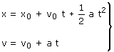
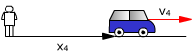
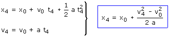
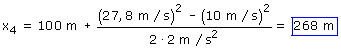

d)
Ecuaciones del movimiento:
|
|
 |
Parámetros: v0 = 36 km/h = 10 m/s x0 = 100 m, a = 2 m/s2 |
Datos: v4 = 27,8 m/s, Incógnita: x4
|  |
 |

El coche estará 268 m a la derecha del observador luego habrá recorrido: 268 - 100 = 168 m